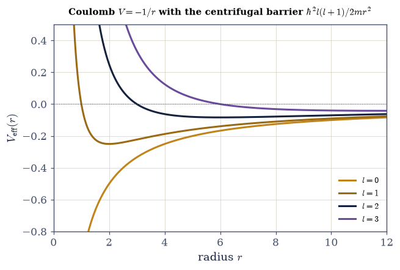
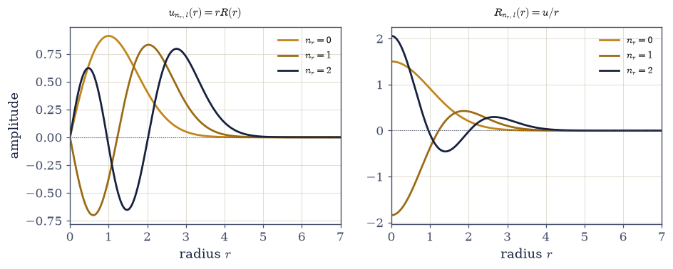
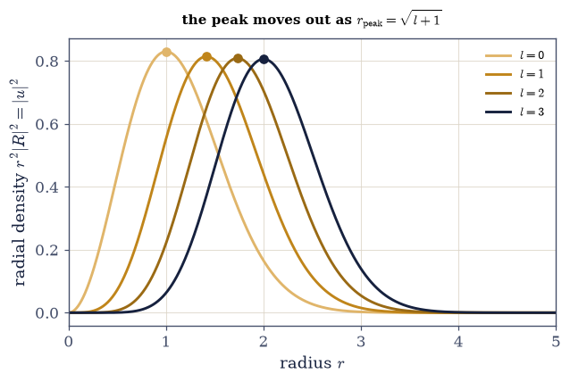

6.16 The Three-Dimensional Schrödinger Equation and Central Potentials#
Notebook overview#
We now have both halves of the three-dimensional puzzle. Movement II taught us to solve one-dimensional Schrödinger equations on a grid (§6.10, §6.11), and the last two notebooks built the angular machinery — the algebra of angular momentum (§6.14) and its realization as the spherical harmonics on the sphere (§6.15). This notebook joins them, and the join is one of the most powerful moves in all of physics: separation of variables for a central potential.
A central potential is one that depends only on the distance from a center, \(V=V(r)\) — the Coulomb pull of a nucleus, a spherical well, the isotropic oscillator, a screened nuclear force. Because such a potential is rotationally symmetric, its Hamiltonian commutes with \(L^2\) and \(L_z\) (§6.15), so by the compatible-observables principle of §6.6 the energy eigenstates can be chosen to be simultaneous eigenstates of \(H\), \(L^2\), and \(L_z\). That forces every eigenstate to factor as \(\psi(r,\theta,\varphi)=R_{n,l}(r)\,Y_l^m(\theta,\varphi)\): a radial function times a spherical harmonic. The angular factor is already solved — it is one of the \(Y_l^m\) of §6.15 — so all that remains is the radial function \(R(r)\).
And the radial problem turns out to be something we already know how to do. Substituting \(u(r)=rR(r)\)
removes the awkward first-derivative term and turns the radial equation into exactly a
one-dimensional Schrödinger equation on the half-line \(r\ge0\),
$\(-\frac{\hbar^2}{2m}u''+V_{\text{eff}}(r)\,u=E\,u,\qquad u(0)=0,\)\(
with just one new ingredient in the potential: the **centrifugal barrier** \)\hbar^2 l(l+1)/2mr^2\(, a
repulsive term that angular momentum adds to \)V(r)\(. It is the quantum image of the centrifugal effect —
it pushes higher-\)l\( states outward, away from the center, and forces the wavefunction to vanish as
\)u\sim r^{l+1}\( at the origin. With \)V_{\text{eff}}\( in hand we simply hand the radial equation to the
**finite-difference eigensolver of [§6.10](schrodinger-on-a-computer.ipynb)** — the very same \)(1,-2,1)/dx^2$ stencil, numpy.linalg.eigh,
now on the half-line — and read off the radial energies and wavefunctions of any central potential.
We check the machine against a case with an exact answer, the isotropic oscillator \(E=(2n_r+l+\tfrac32) \hbar\omega\), and notice a curiosity in passing: its energy depends only on the combination \(2n_r+l\), so different \((n_r,l)\) states pile up at the same energy — an “accidental” degeneracy that hints at a hidden symmetry. The same phenomenon, in a sharper form, is the crown of the next notebook: hydrogen, whose energy depends on \(n=n_r+l+1\) but not on \(l\) at all.
As in every Volume VI notebook, each exercise opens with a crystal-clear statement and enumerated parts, each naming the exact operation — the \(u=rR\) reduction, the effective potential
\(V+\hbar^2l(l+1)/2mr^2\), and the §6.10 finite-difference numpy.linalg.eigh solver on a numpy.linspace
radial grid that avoids \(r=0\).
Conventions and method notes. \(\hbar=m=1\) (and \(\omega=1\) for the oscillator). The radial grid is the interior of \((0,r_{\max}]\) — we exclude \(r=0\) (the centrifugal term diverges there) and \(r_{\max}\), which imposes the Dirichlet walls \(u(0)=u(r_{\max})=0\); \(r_{\max}\) must be large enough that \(u\) has decayed. Radial functions are normalized so \(\int_0^\infty|u|^2dr=1\), equivalently \(\int_0^\infty|R|^2 r^2dr=1\) (since \(u=rR\)). The radial quantum number \(n_r=0,1,2,\dots\) counts radial nodes. See Sakurai & Napolitano and Griffiths (central potentials, the radial equation); and Notebooks §6.15 (the spherical harmonics, the angular part), §6.10 (the finite-difference eigensolver, reused here), §6.6 (compatible observables \(H,L^2,L_z\)), and §6.12 (the 1-D oscillator, whose 3-D cousin appears below).
Theory in brief#
Central potentials and rotational symmetry#
A central potential depends only on \(r=|\mathbf r|\), so
The Hamiltonian is rotationally invariant and commutes with \(L^2\) and \(L_z\) (§6.15). By the compatible-observables principle (§6.6), the energy eigenstates can be chosen as simultaneous eigenstates of \(H\), \(L^2\), and \(L_z\) — labelled by an energy, by \(l\), and by \(m\).
Separation of variables#
In spherical coordinates the Laplacian splits into a radial piece and an angular piece, and the angular piece is exactly \(-L^2/\hbar^2 r^2\) (§6.15). Substituting \(\psi=R(r)Y_l^m(\theta,\varphi)\) and using \(L^2Y_l^m=\hbar^2 l(l+1)Y_l^m\),
the angular dependence cancels and the three-dimensional problem becomes a family of one-dimensional radial problems, one for each \(l\).
The \(u=rR\) reduction#
The radial equation still carries a first-derivative term, but the substitution \(u(r)=rR(r)\) removes it:
which is exactly a one-dimensional Schrödinger equation on the half-line \(r\ge0\). The boundary condition \(u(0)=0\) is regularity: \(R=u/r\) must stay finite at the origin. Every technique of Movement II applies unchanged.
The centrifugal barrier#
The effective potential carries one new term beyond \(V(r)\):
the centrifugal barrier — a repulsive potential, growing with \(l\), the quantum image of the classical centrifugal effect. It pushes higher-\(l\) states outward (the radial peak moves out with \(l\)) and forces \(u\sim r^{l+1}\) near the origin, so a particle with angular momentum avoids the center. Only \(l=0\) (\(s\) states) feel no barrier and can reach \(r=0\).
Solving on the grid#
Put \(r\) on a grid that avoids \(r=0\), build \(V_{\text{eff}}\), and apply the §6.10 finite-difference eigenmethod:
This returns the radial energies \(E_{n,l}\) and radial functions for any central \(V(r)\); \(n_r\) counts the radial nodes, and the full state is \(R_{n,l}(r)Y_l^m(\theta,\varphi)\).
Setup#
Data and instruments only: the series palette, the natural units \(\hbar=m=1\), the radial density \(|u|^2\) that the peak-finding and the plots read off, and two thin finite-difference derivative wrappers for the analytic checks. The two objects this notebook is named for are deliberately absent — the effective potential with its centrifugal barrier Eq. 581, which you write in Exercise 2, and the radial eigensolver Eq. 582, which you write in Exercise 3.
The Setup below holds this notebook’s data and instruments — nothing you are asked to build. It is collapsed so the building stays yours; expand it whenever you want the details.
Exercise 1 — Separation of variables#
Rotational symmetry does the whole job here. A central potential makes \(H\) commute with \(L^2\) and \(L_z\) (§6.15), so the energy eigenstates can be chosen to factor as \(\psi=R(r)Y_l^m\), and the angular factor then contributes nothing to the radial problem but the c-number \(\hbar^2 l(l+1)\) Eq. 578, Eq. 579. The angular problem is already solved; only the radius remains, as a one-dimensional radial equation in which \(l\) enters through that one combination and nowhere else. The claim is testable because the isotropic oscillator has an exact radial ground state for every \(l\) — \(R_{0,l}(r)\propto r^le^{-r^2/2}\), with energy \(E=(l+\tfrac32)\hbar\omega\) — so if the separation is right, applying the separated radial operator to that function must return \(E\) times it.
Recall \(H\) commutes with \(L^2,L_z\) (rotational symmetry, §6.15), so eigenstates factor as \(R(r)Y_l^m\) and the angular part contributes the c-number \(\hbar^2 l(l+1)\) (from \(L^2Y_l^m=\hbar^2 l(l+1) Y_l^m\)).
Write the separated radial equation \(-\frac{\hbar^2}{2m}(R''+\frac2r R')+[V+\frac{\hbar^2 l(l+1)}{2mr^2}]R=ER\).
Take the known exact solution \(R_{0,l}(r)\propto r^l e^{-r^2/2}\) of the isotropic oscillator and apply the radial operator (derivatives by finite differences, the
_d1and_d2helpers).Confirm the result is \(E\,R\) with \(E=(l+\tfrac32)\hbar\omega\) — the separated equation holds.
the exact oscillator radial ground state R₀ₗ ∝ rˡe^(−r²/2) satisfies the separated radial equation:
l=0: (radial operator · R)/R = 1.5000 (expect E=(l+3/2) = 1.5)
l=1: (radial operator · R)/R = 2.5000 (expect E=(l+3/2) = 2.5)
l=2: (radial operator · R)/R = 3.5000 (expect E=(l+3/2) = 3.5)
the angular part contributed only ℏ²l(l+1); the 3-D equation separated into this radial equation
Validation 1#
✓ a central potential separates: ψ=R(r)Yₗᵐ reduces H to a radial equation with l entering via ℏ²l(l+1), satisfied by the exact oscillator solution with E=(l+3/2)
True
Exercise 2 — The \(u=rR\) reduction and the effective potential#
The radial equation of Exercise 1 still carries a first-derivative term, and one substitution removes it. Writing \(u(r)=rR(r)\) and using the identity \(\frac{1}{r^2}(r^2R')'=\frac{u''}{r}\) turns it into \(-\frac{\hbar^2}{2m}u''+V_{\text{eff}}(r)\,u=E\,u\) Eq. 580 — exactly a one-dimensional Schrödinger equation on the half-line, so the 3-D radial problem is a 1-D problem and all of Movement II applies unchanged. The boundary condition comes free: \(R=u/r\) must stay finite at the origin, so \(u(0)=0\), a wavefunction against a wall. The one new ingredient sits in the potential, \(V_{\text{eff}}(r)=V(r)+\hbar^2 l(l+1)/2mr^2\) Eq. 581 — the central potential plus the centrifugal barrier that angular momentum adds, repulsive and growing with \(l\).
Write
effective_potential(r, V, l), returning \(V+\hbar^2 l(l+1)/2mr^2\) for a central potentialValready sampled on the radial gridrand an integerl— the effective potential this exercise is named for, and the only place \(l\) enters the radial problem.Verify the reduction identity \(\frac{1}{r^2}(r^2R')'=u''/r\) numerically for an arbitrary smooth test \(R(r)\) (finite differences, the
_d1and_d2helpers), and check \(u(0)=0\) at the first grid point.Plot \(V_{\text{eff}}\) for the Coulomb attraction \(V=-1/r\) at several \(l\) and watch the centrifugal barrier grow.
u=rR reduction: max|(1/r²)(r²R')' − u''/r| in bulk = 8.30e-06 (→ the first-derivative term cancels)
so the radial equation becomes −(ℏ²/2m)u'' + V_eff u = E u, a 1-D Schrödinger equation
boundary condition: u=rR ⇒ u(0)=0 (here u[r=0.001] = 1.000e-03 → 0)
Validation 2#
✓ the substitution u=rR removes the first-derivative term, giving a 1-D Schrödinger equation −(ℏ²/2m)u''+V_eff u=E u with V_eff=V+ℏ²l(l+1)/2mr² and u(0)=0
True

Fig. 552 The centrifugal barrier. The effective radial potential \(V_{\text{eff}}(r)=V(r)+\hbar^2 l(l+1)/2mr^2\) for the Coulomb attraction \(V=-1/r\) (the hydrogen case of §6.17), for \(l=0,1,2,3\). The bare potential (\(l=0\), amber) plunges to \(-\infty\) at the origin — an \(s\) electron feels no barrier and can reach the nucleus. For \(l>0\) the repulsive centrifugal term \(\hbar^2 l(l+1)/2mr^2\) (which diverges as \(+1/r^2\), faster than the Coulomb \(-1/r\)) wins at small \(r\) and throws up a wall near the origin, taller and further out for larger \(l\). The particle is held in the well between the centrifugal wall and the long-range tail, and the higher its angular momentum, the further out it must orbit. This is the quantum centrifugal effect, and it is why higher-\(l\) states peak at larger radius (Exercise 5).#
Exercise 3 — Solving the radial equation on the grid#
The reduced equation is a one-dimensional Schrödinger equation, so the finite-difference
eigenmethod of §6.10 solves it with nothing changed in principle: replace \(u''\) by the
\((1,-2,1)/dr^2\) stencil, add \(\mathrm{diag}\,V_{\text{eff}}\), and hand the matrix to
numpy.linalg.eigh Eq. 582. Two details are radial rather than Cartesian. The grid
must exclude \(r=0\), where the centrifugal term diverges, and \(r_{\max}\); taking the interior points
of \((0,r_{\max})\) imposes the Dirichlet walls \(u(0)=u(r_{\max})=0\) for free, so \(r_{\max}\) only has
to be large enough that \(u\) has decayed. And numpy.linalg.eigh returns unit-norm vectors, so
dividing the columns by \(\sqrt{dr}\) turns them into functions with \(\int|u|^2dr=1\). The radial
quantum number \(n_r\) then counts the interior nodes of \(u\), exactly as the quantum number counted
nodes in the 1-D problems of Movement II — and \(R=u/r\) recovers the true radial function, finite at
the origin precisely because \(u(0)=0\).
Write
solve_radial(V, l, rmax, N), returning the gridr, the ascending radial energies and the matrix whose column \(n_r\) is \(u_{n_r,l}\), for a central potential passed as a callableV(r): build the interior grid withnumpy.linspace, form \(V_{\text{eff}}\) with theeffective_potentialyou wrote in Exercise 2, assemble the \((1,-2,1)/dr^2\) kinetic stencil (numpy.diag) plus \(\mathrm{diag}\,V_{\text{eff}}\), diagonalize withnumpy.linalg.eigh, and divide the eigenvectors by \(\sqrt{dr}\). Write this one yourself — the implementation is the lesson.Solve the isotropic oscillator \(V=\tfrac12r^2\) at \(l=0\) and report the lowest radial energies, counting the radial nodes of each \(u_{n_r,0}\).
Confirm the regularity condition on the grid: \(u\) at the first grid point is a small fraction of its peak, since \(u\propto r\) near the origin.
Plot \(u\) (which vanishes at \(r=0\)) and \(R=u/r\).
isotropic oscillator, l=0, lowest radial states (nₙ = radial-node count):
n_r=0: E = 1.5000 (radial nodes ≈ 0)
n_r=1: E = 3.5000 (radial nodes ≈ 1)
n_r=2: E = 5.4999 (radial nodes ≈ 2)
n_r=3: E = 7.4998 (radial nodes ≈ 3)
u(0) → 0 (regularity): u at the first grid point is 1.2% of the peak amplitude
Validation 3#
✓ the finite-difference eigenmethod (§6.10) solves the radial equation: ascending energies, node-counting radial functions, and u(0)=0
True

Fig. 553 The radial functions on the half-line. The isotropic-oscillator radial solutions for \(l=0\), radial quantum numbers \(n_r=0,1,2\). Left: the reduced function \(u_{n_r,l}(r)=rR(r)\), which obeys a one-dimensional Schrödinger equation and vanishes at the origin (\(u(0)=0\)) like a wavefunction against a wall; \(n_r\) counts its interior nodes (\(0,1,2\)), exactly as the quantum number counted nodes in the 1-D problems of Movement II. Right: the true radial function \(R(r)=u/r\), finite at the origin (the \(u(0)=0\) boundary is precisely what keeps \(R=u/r\) from blowing up). These are the radial factors of the full states \(\psi=R_{n_r,l}(r)Y_l^m(\theta,\varphi)\); the angular factor is the spherical harmonic of §6.15.#
Exercise 4 — The 3D isotropic oscillator: an exact check#
The isotropic oscillator \(V=\tfrac12 m\omega^2 r^2\) is one of the few central potentials whose spectrum is known in closed form: in Cartesian coordinates it is three of the 1-D oscillators of §6.12, and stacking their ladders gives \(E=(2n_r+l+\tfrac32)\hbar\omega\) in the radial labels Eq. 583. That makes it an exact check on the whole reduction — the numbers coming off the grid have somewhere to be compared to. It also carries a surprise. The energy depends only on the combination \(2n_r+l\), so states with different \((n_r,l)\) pile up at the same level, a degeneracy beyond the \((2l+1)\) that rotational symmetry alone requires. Such an “accidental” degeneracy is the fingerprint of a hidden symmetry, and the same phenomenon in a sharper form is the crown of §6.17.
Solve the radial equation for \(l=0,1,2\) with the
solve_radialyou wrote in Exercise 3.Compare the lowest radial levels to \((2n_r+l+\tfrac32)\hbar\omega\) (
numpy.linalg.eighvs the formula).Confirm agreement to grid accuracy.
Exhibit the degeneracy: find two states with different \((n_r,l)\) but the same \(2n_r+l\), and confirm they share an energy.
isotropic oscillator: E = (2n_r + l + 3/2) ℏω, ω=1
l=0: numeric [1.5 3.5 5.5] exact [np.float64(1.5), np.float64(3.5), np.float64(5.5)]
l=1: numeric [2.5 4.5 6.5] exact [np.float64(2.5), np.float64(4.5), np.float64(6.5)]
l=2: numeric [3.5 5.5 7.5] exact [np.float64(3.5), np.float64(5.5), np.float64(7.5)]
energy depends only on 2n_r + l → 'accidental' degeneracy beyond the (2l+1) of rotation:
E=3.5: (n_r=1, l=0) = 3.500 and (n_r=0, l=2) = 3.500
this hidden symmetry (the oscillator's SU(3)) is the parallel to hydrogen's l-degeneracy (§6.17)
Validation 4#
✓ the 3D isotropic oscillator spectrum is E=(2n_r+l+3/2)ℏω — the radial reduction validated against an exact result [max|Δ| = 0.000107562 (rtol=1e-06, atol=0.01)]
True
Exercise 5 — The centrifugal barrier pushes states outward#
The centrifugal barrier is not only a term in an equation; it has a visible consequence. Angular momentum holds the particle away from the center — the quantum centrifugal effect Eq. 581 — and two signatures of it can be read straight off the grid. The radial probability density \(r^2|R|^2=|u|^2\) peaks further out as \(l\) grows (for the oscillator, at \(r_{\text{peak}}=\sqrt{l+1}\)), and near the origin the barrier chokes the amplitude off as \(u\sim r^{l+1}\), so a state with angular momentum simply never reaches the center. Only the barrier-free \(l=0\) states do.
For the oscillator, solve the lowest radial state (\(n_r=0\)) for \(l=0,1,2,3\) with the
solve_radialyou wrote in Exercise 3.Find where the radial density \(r^2|R|^2=|u|^2\) peaks (the
radial_densityhelper,numpy.argmax).Confirm the peak moves outward with \(l\) (here to \(r_{\text{peak}}=\sqrt{l+1}\)).
Confirm \(u\sim r^{l+1}\) near the origin (a
numpy.polyfitof \(\log u\) vs \(\log r\) at small \(r\)).
centrifugal push-out (oscillator ground state per l): radial density peaks at r_peak
l=0: r_peak = 1.001 (√(l+1) = 1.000)
l=1: r_peak = 1.415 (√(l+1) = 1.414)
l=2: r_peak = 1.733 (√(l+1) = 1.732)
l=3: r_peak = 1.997 (√(l+1) = 2.000)
near the origin u ~ r^p: for l=2, fitted p = 2.92 (expect l+1 = 3)
Validation 5#
✓ the centrifugal barrier pushes higher-l states outward (the radial peak moves out with l) and suppresses them at the origin as u~r^(l+1)
True

Fig. 554 Angular momentum pushes the particle outward. The radial probability density \(r^2|R|^2=|u|^2\) of the lowest oscillator state (\(n_r=0\)) for \(l=0,1,2,3\) (light to dark). As \(l\) grows, the centrifugal barrier \(\hbar^2 l(l+1)/2mr^2\) walls off the origin ever more strongly, and the density’s peak (dots) marches outward — here to \(r_{\text{peak}}=\sqrt{l+1}\) — while the amplitude near \(r=0\) is choked off as \(u\sim r^{l+1}\). A particle with more angular momentum orbits further from the center, exactly as a classical one flung faster on a string rides out to a larger radius. Only the \(l=0\) state, which feels no barrier, reaches all the way in to the origin.#
Exercise 6 — A general central potential (student)#
The machine needs only \(V(r)\) Eq. 582, so it does not care whether a closed-form spectrum exists — and every central problem is therefore accessible. Two potentials with no elementary spectrum make the point: a spherical finite well, flat at \(-V_0\) inside a radius \(a\) and zero outside, and the screened Coulomb (Yukawa) potential \(-e^{-r/a}/r\), in which the long-range Coulomb pull is cut off beyond a screening length \(a\). Both bind a finite number of states, and how many depends on the depth and the range — the three-dimensional echo of the 1-D well counting of §6.11.
Define \(V(r)\) (a spherical well of depth \(V_0\) and radius \(a\); then the Yukawa potential).
Solve the radial equation for \(l=0\) with the
solve_radialyou wrote in Exercise 3.Report the bound energies (\(E<0\)) and count them.
Compare the two: note how screening changes the count and the depth of the levels.
spherical well (V0=2.0, a=3.0), l=0: 2 bound state(s), E = [-1.602 -0.486]
screened Coulomb (Yukawa, a=2.0), l=0: ground state E = -0.1481
(fewer, shallower bound states than bare Coulomb — screening weakens the long-range pull, as in the depth-vs-count of §6.11)
Validation 6#
✓ the radial eigenmethod solves arbitrary central potentials: it returns sensible bound states for a spherical well and a screened Coulomb (Yukawa) potential
True
Exercise 7 — One equation for every central force (synthesis)#
Rotational symmetry did most of the work for us. Because a central potential commutes with the angular momentum (§6.6, §6.15), every eigenstate is a spherical harmonic times a radial function, and the radial function obeys a one-dimensional Schrödinger equation we already knew how to solve (§6.10). The only new ingredient was the centrifugal barrier, the repulsive term angular momentum adds to the potential, which pushes orbiting states outward and holds them off the center. This single reduction handles the spherical well, the isotropic oscillator, and the screened nucleus alike — and, next, the one central potential that matters most.
There is no new computation to do here; the reduction is the result. Three dimensions sounded harder than one, and for a general potential it is. But symmetry is a solvent: point the force at a center, and the hard three-dimensional problem dissolves into the spherical harmonics we already had (§6.15) and a radial equation we already solved (§6.10). Almost every quantum problem you can actually compute — atoms, nuclei, quantum dots — is a central-force problem, for exactly this reason. In §6.17 the same radial equation, now with the Coulomb potential \(V=-e^2/4\pi\varepsilon_0 r\), gives the hydrogen atom: its spectrum, its orbitals, and the deepest surprise of the volume — why its energy does not depend on \(l\) at all, the sharp version of the “accidental” oscillator degeneracy we glimpsed here.
Notebook summary#
The three-dimensional Schrödinger equation, reduced to a radial one — the third notebook of Movement III.
Rotational symmetry Eq. 578: a central \(V(r)\) makes \(H\) commute with \(L^2,L_z\) (§6.6, §6.15), so eigenstates factor as \(\psi=R_{n,l}(r)Y_l^m(\theta,\varphi)\).
Separation Eq. 579: the angular part is a solved spherical harmonic; the radial part is an ODE with \(l\) entering only via \(\hbar^2 l(l+1)\).
The \(u=rR\) reduction Eq. 580: turns the radial equation into a 1-D Schrödinger equation on the half-line, \(-\frac{\hbar^2}{2m}u''+V_{\text{eff}}u=Eu\), \(u(0)=0\).
The centrifugal barrier Eq. 581: \(V_{\text{eff}}=V+\hbar^2 l(l+1)/2mr^2\) pushes higher-\(l\) states outward (\(r_{\text{peak}}\) grows with \(l\)) and forces \(u\sim r^{l+1}\) at the origin.
The grid method Eq. 582: the §6.10 stencil \(+\,\mathrm{diag}\,V_{\text{eff}}+\)
eighsolves any central \(V(r)\) — verified on the oscillator, a spherical well, and a Yukawa potential.Exact check Eq. 583: \(E=(2n_r+l+\tfrac32)\hbar\omega\); its \(2n_r+l\) degeneracy hints at a hidden symmetry — the parallel to hydrogen’s \(l\)-degeneracy (§6.17).
Point a force at a center and three dimensions collapse to one. The radial equation is ready; next, the Coulomb potential turns it into the hydrogen atom.
Outlook#
The hydrogen atom (§6.17): the Coulomb radial equation, the Rydberg spectrum \(-13.6/n^2\,\)eV, the orbitals, and the \(l\)-degeneracy / hidden symmetry — the crown of the volume.
Spin added to the orbital picture (§6.18): the full set of quantum numbers \(n,l,m,m_s\).
Many-electron atoms and the periodic table (a horizon; the angular structure of §6.15 with this radial structure, plus the exclusion principle).
The hidden symmetries of the Coulomb and oscillator potentials (the Runge–Lenz vector; named in §6.17).
Cross-reference §6.15 (the spherical harmonics, the angular part), §6.10 (the eigensolver, reused), §6.6 (compatible observables), §6.12 (the 1-D oscillator), and forward to §6.17, §6.18.